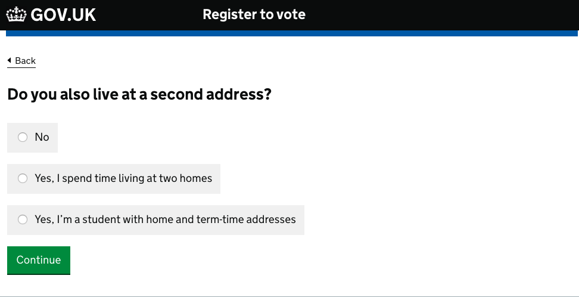

Beta This is new guidance. Complete our quick 5-question survey to help us improve it.
Design
Writing for user interfaces
Aim to minimise cognitive load by being as clear as possible and using the same language as your users. This helps:
- reduce the amount of time you spend dealing with mistakes
- make your service inclusive for people who struggle with reading or have limited English
- make your service accessible
Even specialist users prefer clear language. No one likes having their time wasted, especially busy people like health workers.
It’s especially important to choose an intuitive name for your service. If your title reflects your users’ language, they’ll be able to find your service and understand what it does.
Don’t follow strict grammar conventions if it makes things clearer not to.
Think about alternatives before you add more words
On the internet people tend to scan rather than read. Even more so when they’re using a transactional service.
So start with less. If you’re creating a form, start with some simple questions and only add help text if user research shows that you need it.
Design your service to take account of the fact that lots of people won’t read the content in detail. For example, ask questions to establish eligibility rather than putting a long list of eligibility conditions on the start page.
If you find yourself having to explain how the user interface works, that’s a sign something has gone wrong. Fix the interface so it doesn’t need explaining.
Ask questions that users can understand
Closed questions are easier to answer than open questions. Especially in government services, where users are often afraid of being caught out.
An example of a closed question might be ‘Do you live at more than one address?’. An open version of this question would be ‘Tell us about your living arrangements’.
A series of simple questions can be easier to answer than one complex question. Especially if parts of it aren’t relevant to all users.
Change the questions until you find what works
If people are struggling to understand a form, think about re-framing the question or changing the form structure as well as the language.
For example, try reversing the question so the user is invited to say ‘no’ rather than ‘yes’ (or the other way round). Sometimes users make assumptions about what the ‘right’ answer is.
Or try more descriptive labels for radio buttons or checkboxes.
For example, an early version of the register to vote service asked users whether they also lived at a second address. User research showed that some people found it difficult to answer ‘yes’ or ‘no’ to this question because they weren’t sure what ‘counted’ as a second address.
It became much easier to answer when the team replaced the ’Yes’ option with two radio buttons - one labelled ‘Yes, I spend time living at two homes’ and the other ‘Yes, I’m a student with home and term-time addresses’.

If some radio button or checkbox labels are phrased differently from the others, it may make the page more readable if you separate the options that are different with an ‘or’.
Keep copy short and direct
Break up copy into short sentences. One idea per sentence.
Space is at a premium with user interfaces. So put the important words first and drop any unnecessary words.
For example, if you’re writing help text there’s usually no need to say ‘This is the total cost’. Just say ‘Total cost’. If you’re writing an error message, don’t say ‘You have entered the wrong password’. Say ‘Wrong password’.
You don’t usually need the word ‘now’. For example, just say ‘apply’ rather than ‘apply now’ (unless you’re giving the user two options: apply now or apply later).
Tone
Be approachable and helpful, but not overly familiar. Remember that it’s government ‘speaking’.
Say ‘sorry’ if something serious has gone wrong - for example, the service has stopped working completely. ‘Sorry, there is a technical problem. Please try again in a few moments.’
There’s no need to say ‘sorry’ in validation error messages.
There’s usually no need to say ‘please’ or ‘please note’.
There’s usually no need to say thank you. For example, it’s fine to say ‘Application complete’ rather than ‘Thank you for your application’.
Avoid things like humorous error messages. People often use government services for serious things or when under stress.
If people don’t notice your copy, you’re probably doing it right. Aim to be boring.
Don’t exclude anyone
Don’t rely on shape, size, colour or location alone to communicate information, because not all users will share that frame of reference. For example, don’t say things like:
- ‘click the green button’
- ‘use the menu on the left of the page’
- ‘find more information in the square box’
Break up long pages with headings. It’s easier to scan and read. Headings should describe the purpose of the text that follows - they shouldn’t be part of the text.
Screen reader users often read out lists of links in isolation, so make the purpose of the link clear from the link text alone. For example, ‘click here’ is not accessible link text.
Sometimes you need to shorten link text to avoid lots of duplication. If you do that, make sure links are still accessible to screen readers. For example, by adding hidden text to the ‘change’ links on check your answers pages.
Style
Follow the GOV.UK style guide on how to write times and dates, spelling, punctuation and other conventions.
Headings and <title>
It’s fine to have headings as questions. In fact, it can help to remove duplication.
But make sure every text box, set of radio buttons or other input field still has a question directly associated with it in the html, so it makes sense to screen readers. For example, by using a visually hidden <legend> or <label>.
Each page should have a single <h1>. The <h1> should describe what the page does.
The <title> should be based on the <h1>, and follow this format:
Where do you live? - register to vote - GOV.UK
Pronouns (we, you, me, my)
Forms are like a conversation between the service and the user.
If it’s the service ‘speaking’, the user is ‘you’ or ‘your’ and the service is ‘we’, ‘us’, ‘our’ and so on.
If it’s the user ‘speaking’, use ‘I’, ‘me’ or ‘my’.
This applies to all microcopy, including headings, input labels and link text.
For example, the Register to vote service asks users ‘What is your National Insurance number?’. If the user doesn’t know their number, they can click a link labelled ‘I don’t know my National Insurance number’.
Use ‘they’ instead of ‘he or she’ or ‘he/she’. It’s simpler, and works better for people who don’t identify as male or female.
Capitalisation and punctuation
Use sentence case everywhere, except for proper nouns.
Headings and input field labels are sentence case, but not punctuated. Write other copy in full sentences, with a full stop at the end.
Contractions and abbreviations
Don’t use ‘ie’. Use ‘for example’ instead of ‘eg’.
Use simple contractions like ‘you’re’ and ‘we’ll’.
Avoid:
- should’ve, could’ve, would’ve, they’ve - these can be hard to read
- negative contractions like ‘can’t’ and ‘don’t’ - some users find them harder to read, or misread them as the opposite of what they say
Validation error messages
Do what you can to help users avoid failing validation and getting an error message. Set up your validation so it’s as tolerant as possible of users entering information in different ways.
So, for example, if you’re asking for the user’s National Insurance number the input field should accept either ‘QQ123456C’ or ‘QQ 12 34 56 C’ - stripping out the spaces before it passes the number through to the back end.
You’ll probably need to create multiple error messages per field, so they’re as specific to the problem as possible. Focus on telling the user how to fix the problem rather than describing what’s gone wrong.
URLs
Make sure your URLs are clear and readable. This will help users understand where they are in your service.
Don’t include personal information (like a user’s name or date of birth) in the <title> field of a URL - you don’t want it to show up in your site analytics.
Legal content
All language should be as simple to understand as possible, including privacy policies and declarations. Explaining users’ rights and obligations clearly is good legal practice as well as being good for usability.
Further reading
Read these blogs to find out more about writing for user interfaces:
- Published by:
- Design community
- Last update:
-
Added guidance about using contractions and abbreviations.
-
Added guidance on designing URLs.
-
Guidance first published